给现场验货员用。按左边菜单从上到下做。看图，对照着点。做完等到右上角 Saved，系统会自动提交。
For on-site QC. Work the left menu from top to bottom. Follow the pictures. When the top right says Saved, the report submits by itself.
1. 打开网站并登录1. Open the site and log in
- 电脑打开 Edge 或 Chrome。
- Open Edge or Chrome on the PC.
- 地址栏输入：https://inspecting.pts-qc.com/
- Type this address: https://inspecting.pts-qc.com/
- 输入公司给你的账号和密码，点橙色 LOG IN。
- Enter the account the office gave you, then click orange LOG IN.
- 忘记密码：联系 Nash 重置。不要点 Reset Password，那个按钮还不能用。
- Forgot password: contact Nash. Do not click Reset Password — that button is not enabled.
登录页。账号在上，密码在下，点 LOG IN。
Login page. Account on top, password below, then LOG IN.
网址要抄全。不要用百度搜，搜到的不是这个系统。
Type the full address. Do not search for it on Baidu — that is not this system.
2. 找到今天的任务2. Find today’s task
- 登录后就是任务列表。
- After login you see the task list.
- 上面可以点：Not Started（没开始） / In Progress（做到一半） / Ready to Submit（可以交） / Submitted（已交）。
- Filter with Not Started / In Progress / Ready to Submit / Submitted.
- 右边搜索框可以打 PO 号或款号。
- Use the search box for PO number or style number.
- 找到自己的单，右边点 Start 或 Continue。
- On your row, click Start or Continue.
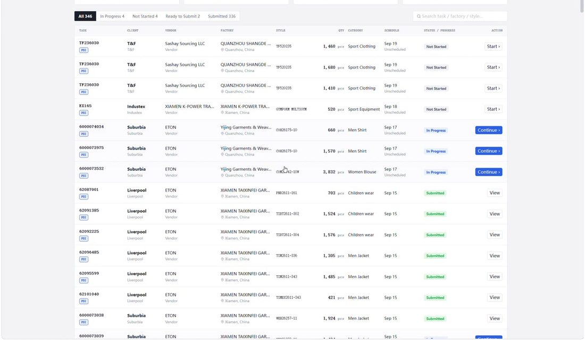
右边：Start = 开始，Continue = 继续做。
Right side: Start = begin, Continue = keep working.
3. 厂门口和产品照3. Factory gate and product photos
打开任务后，左边是菜单，从上到下做。先拍照。
Inside a task, the left menu is the order of work. Start with photos.
- Factory Gate：拍一张工厂门口。只能一张，再拍会替换。
- Factory Gate: one photo of the factory entrance. A new photo replaces the old one.
- Product Photos：产品平铺/挂拍。插入几张就显示几张，需要几张传几张。
- Product Photos: product as presented. However many photos you add, that many will show.
- 点 Add Photos，或把照片拖进虚线框。
- Click Add Photos, or drag files into the dashed box.
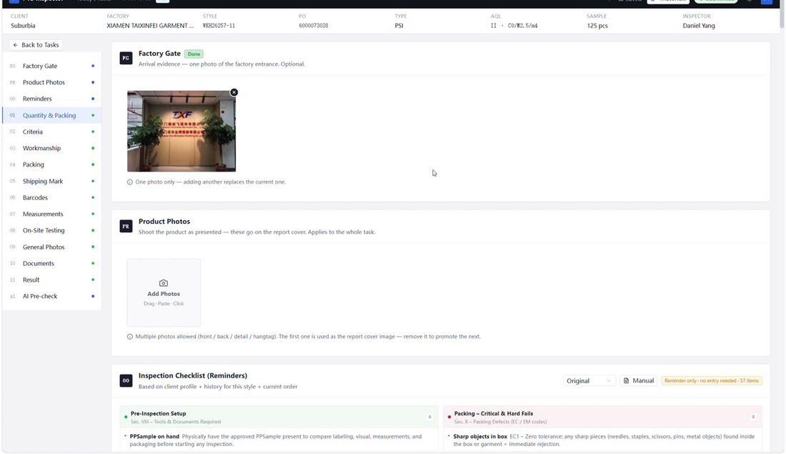
左边菜单从上往下做。产品照：插入几张，页面上就显示几张。
Work the left menu from top to bottom. Product Photos: add as many as you need — they all show.
4. 数量和抽箱（Quantity & Packing）4. Quantity & Packing
- 系统可能预填了数字。以工厂现场实际为准，不对就改。办公室不一定知道现场箱数。
- Numbers may be pre-filled. Change them to match what you see at the factory. The office may not know the actual carton count.
- 核对并按实际填写：订单数、实装数、总箱数、抽几箱、抽几件。
- Check and enter the real figures: order qty, shipped qty, total cartons, sample cartons, sample qty.
- 默认用 Combined（整票一起抽）。只有办公室让你分的时候，才点 Split Groups。
- Keep Combined unless the office told you to split. Then use Split Groups.
- 把抽到的箱号写在 Sampled Carton Numbers，例如：895S: 10, 23, 41
- Type sampled carton numbers in Sampled Carton Numbers, e.g. 895S: 10, 23, 41
- 最下面 Quantity Verdict 选 PASS / FAIL / N/A。
- Set Quantity Verdict to PASS / FAIL / N/A at the bottom.
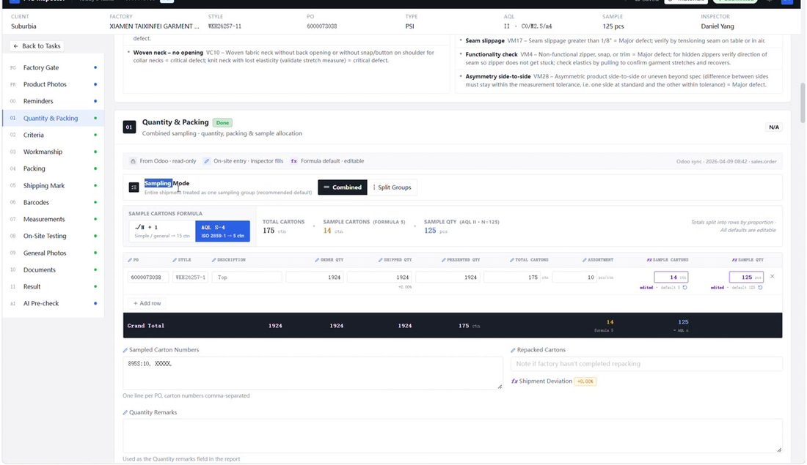
箱数、件数按你现场看到的改。预填不对就改成对的。
Change carton and piece counts to what you actually count on site.
5. 检验标准和做工缺陷5. Criteria and workmanship defects
Inspection Criteria
Inspection Criteria
有没有金样、客户资料、QC 文件。有就点 YES，没有点 NO，这单不需要点 N/A。
Golden sample, client spec, QC file: click YES if present, NO if missing, N/A if not needed.
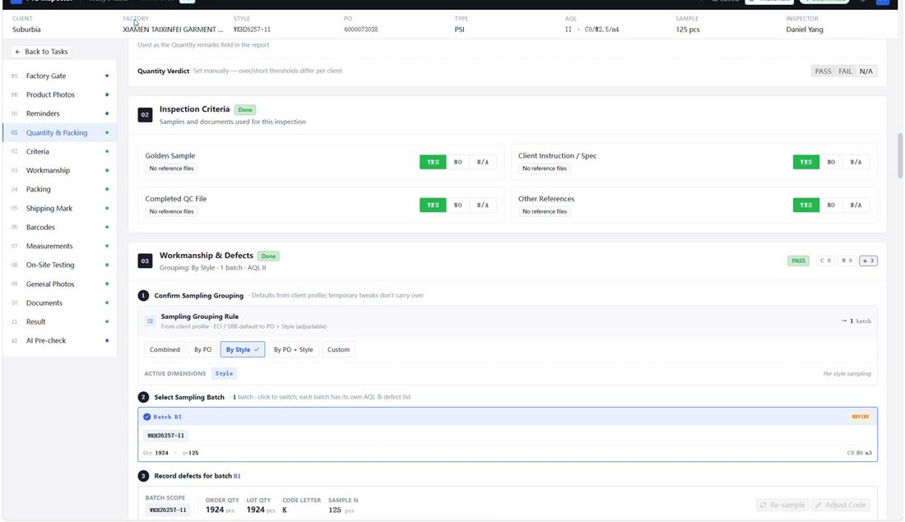
记缺陷：点蓝色 + New Defect
Record a defect: click blue + New Defect
- 在代码框打几个字母，选出正确代码（如 VM22）。
- Type a few letters and pick the code (example: VM22).
- 写部位 Location（袖子、领子…），写样品号。
- Fill Location (sleeve, collar…) and Sample No.
- 件数填在 C / M / m（严重 / 主要 / 次要）。只填一档。
- Put the count in C, M or m (Critical / Major / Minor). Use one grade only.
- 点 Add。
- Click Add.
- 在缺陷右边 + Add 贴上缺陷照片。
- Click + Add on the right of that defect to attach photos.
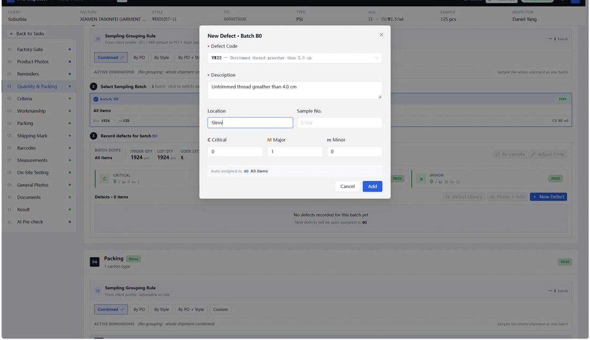
搜索代码 → 填部位和件数 → Add。
Search the code → location and count → Add.
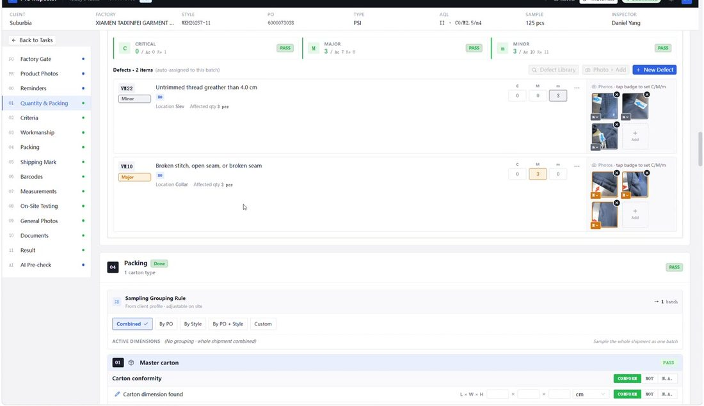
每条缺陷右边都要有照片。C / M / m 的数字要和现场一致。
Every defect needs photos. C / M / m counts must match what you found.
6. 装箱、箱唛、条码6. Packing, shipping mark, barcode
Packing 装箱
Packing
- 填外箱尺寸 L×W×H 和箱重。
- Enter carton size L×W×H and carton weight.
- 内包装、配比等项，对的点 CONFORM，不对点 NOT。
- Inner packing / assortment: CONFORM if OK, NOT if not.
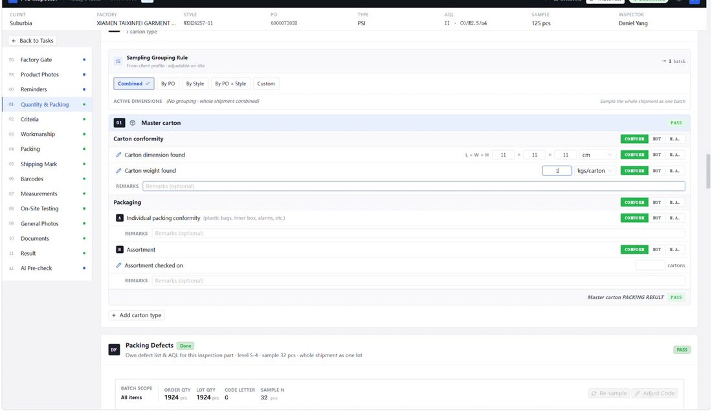
Shipping Mark 箱唛
Shipping Mark
主唛、侧唛、产地、箱规，一项一项点 PASS / FAIL / N/A。有问题可点 + Add note 写一句。
Main mark, side mark, country of origin, carton size vs spec: PASS / FAIL / N/A. Use + Add note if needed.
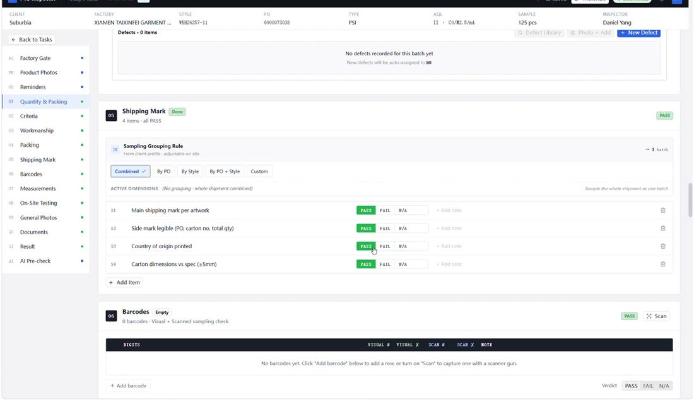
Barcodes 条码
Barcodes
- 先点右上角 Scan。
- First click Scan at the top right.
- 用连在电脑上的扫码枪对着条码扫。数字会自动进来，不用手打。
- Scan with the barcode gun plugged into the PC. The number is recorded automatically — do not type it.
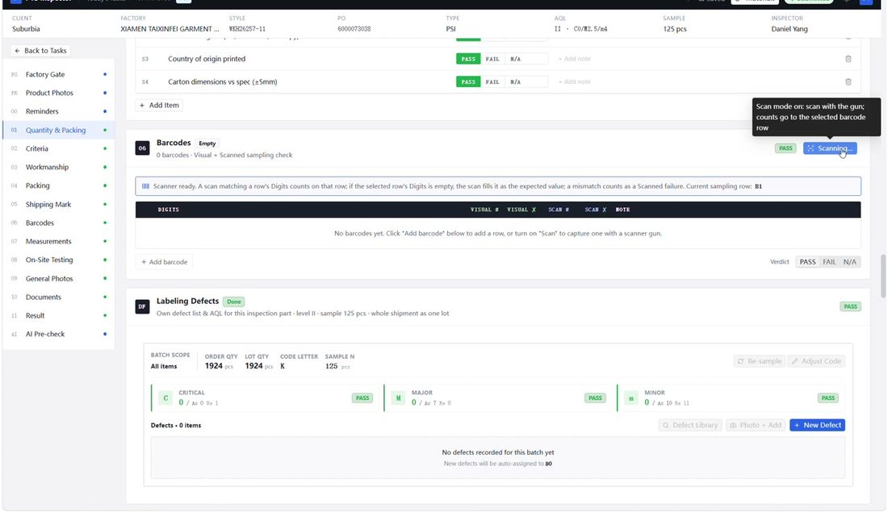
扫之前一定要点 Scan。不点 Scan，枪扫了也不会记进来。
Click Scan before you pull the trigger. If Scan is off, the gun will not record anything.
7. 量度和现场测试7. Measurements and on-site tests
Measurements 量度表
Measurements
- 系统通常已经有尺寸表。没有就点 Import Spec Sheet 导入客户表。
- The size chart is usually already there. If not, click Import Spec Sheet.
- 在空白格填量到的数字。单位一般是 inch。
- Type measured values in the empty cells. Unit is usually inch.
- 红格 = 超公差，要再量一次确认。
- Red cell = out of tolerance. Measure again to confirm.
- 衣服称重：点 + Add weight。
- Garment weight: click + Add weight.
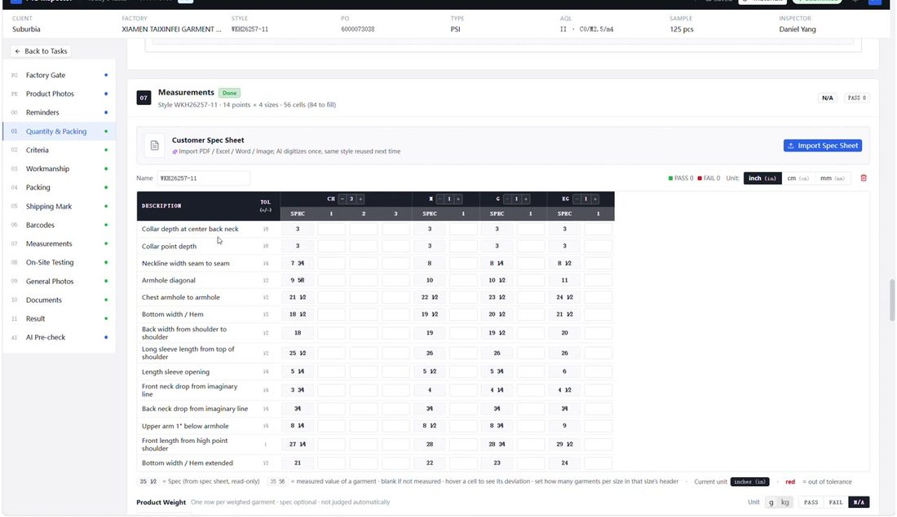
On-Site Testing 现场测试
On-Site Testing
摩擦、拉力、缝拉力、条码等。做了点 CONFORM，没做或不适用点 N.A.，失败点 NOT CONFORM。结果可写在 Findings。
Rub, pull, seam, barcode, etc. CONFORM if done and OK, N.A. if not required, NOT CONFORM if failed. Write findings if needed.
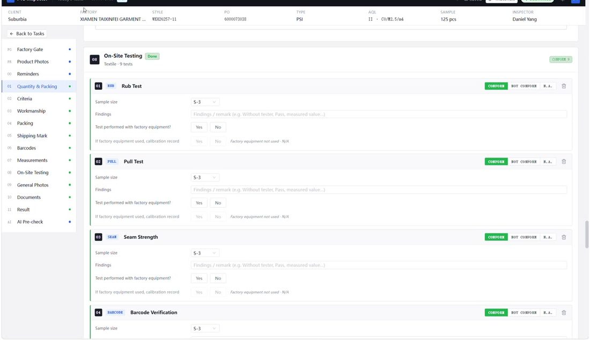
8. 现场照片 General Photos（重点）8. General Photos (important)
左边菜单 09 General Photos。上面一排是分类（对应报告里不同的页）。必须先点对分类，再插入照片，插错页，报告里就会出现在错误的位置。
Left menu 09 General Photos. The tabs are report sheets. Click the correct tab first, then add photos. Wrong tab = wrong page in the report.
- 点要传的那一类，例如箱唛点 Carton & Shipping Mark，洗标点 Hangtag / Care Label，量度照点 Dimension photos。
- Click the matching tab, e.g. carton marks → Carton & Shipping Mark, care labels → Hangtag / Care Label, measurement photos → Dimension photos.
- 再把照片拖进下面的框，或点框上传。插入几张就显示几张。
- Then drop photos into the box (or click to upload). However many you add, that many will show.
- 一类传完，再点下一类，继续传。不要把所有照片塞进同一个分类。
- Finish one tab, then click the next. Do not dump every photo into one tab.
| 点这个分类Click this tab |
放这些照片Put these photos |
| Product Family Photo | 产品整体、款式照Product / style photos |
| Carton & Shipping Mark | 外箱、箱唛Cartons and shipping marks |
| Inner Packing | 内包装、胶袋、配件Inner packing, polybags, accessories |
| Factory & Storage | 车间、仓库、堆货Workshop, warehouse, stock |
| Hangtag / Care Label | 吊牌、洗标、主标Hangtag, care label, main label |
| Dimension photos | 量度、卡尺照Measurement / caliper photos |
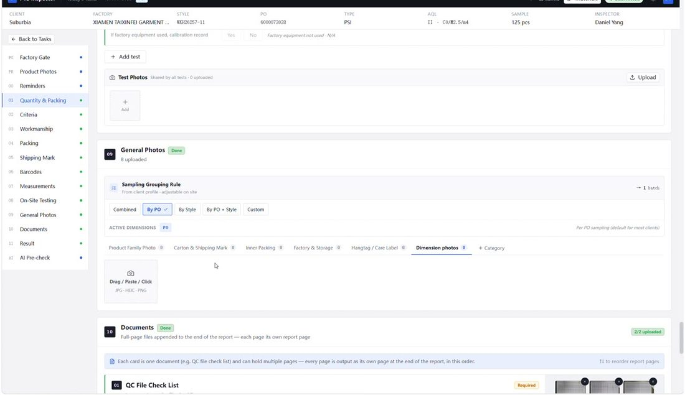
先点上面的分类名字（图里当前是 Dimension photos），再往框里插图。
Click the tab name first (Dimension photos is selected here), then drop photos into the box.
不要不点分类就把照片丢进去。箱唛、洗标、量度必须各进各的页。
Do not add photos without selecting a tab. Carton marks, labels and measurements must each go on their own sheet.
Documents 文件
Documents
QC 检查表、反贿赂信是 Required。点 Upload 或 Capture 拍照上传。
QC File Check List and Anti-bribery Letter are Required. Use Upload or Capture.
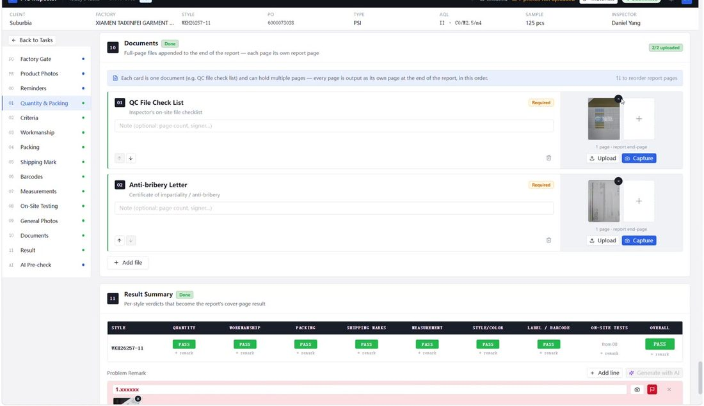
在 Result Summary 下面的 Problem Remark。有问题必须写在这里，不要只改 PASS/FAIL 不写原因。
Under Result Summary is Problem Remark. If there is a problem, write it here. Do not only change PASS/FAIL.
- 点右边 + Add line，加一条备注。
- Click + Add line to add one remark.
- 在这一行写清楚问题，例如：No approval sample。
- Type the problem on that line, e.g. No approval sample.
- 重要问题或 FAIL：点这一行右边的小红旗，这条会变红，报告里也会标红。
- Important issues or FAIL: click the small red flag on that line. The line turns red and is marked red on the report.
- 点相机图标，或把照片拖到这一行，给这条备注配图说明。
- Click the camera icon, or drop a photo onto that line, to illustrate the remark.
- 一条问题一行。不要把所有问题写在同一行。
- One problem per line. Do not put every issue on the same line.
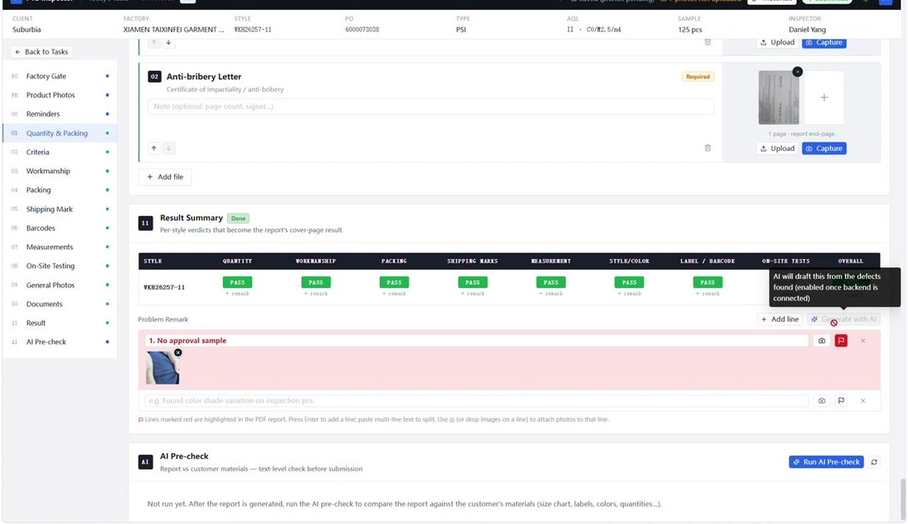
+ Add line 加行。小红旗 = 重要或 FAIL。右边相机 = 给这条备注插图。
+ Add line adds a row. Red flag = important or FAIL. Camera = attach a photo to that remark.
FAIL 或严重问题：写备注 + 点红旗 + 插一张能看清问题的照片。
For FAIL or a serious issue: write the remark, turn on the red flag, and attach a clear photo.
10. 保存（不用自己点提交）10. Save (no need to click Submit)
- 看右上角：要显示 Saved 才可以离开。
- Top right must say Saved before you leave.
- 还在 Unsaved 或 Saved (photos pending)：等网络，等到 Saved。
- If you see Unsaved or Saved (photos pending): wait until it is Saved.
- 出现橙色 photos not uploaded：照片还在传。不要关电脑、不要关网页。
- Orange photos not uploaded means photos are still sending. Do not close the browser.
- 做完并等到 Saved 即可。系统会自动提交，不用自己点 Submit，也不用去点右上角绿色 Submitted。
- Finish the work and wait for Saved. Submit is automatic — do not click Submit, and do not tap the green Submitted badge.
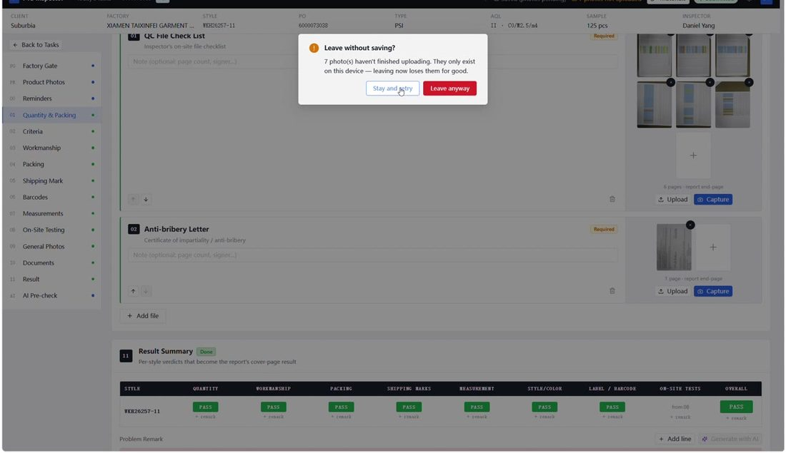
弹出 Leave without saving? 时，必须点左边 Stay and retry。点红色 Leave anyway，照片会丢，补不回来。
If you see Leave without saving? click Stay and retry. Leave anyway deletes photos that were not uploaded. They cannot be recovered.
工厂网络慢：做完一节就停一下，看右上角变成 Saved，再做下一节。
Slow factory Wi-Fi: finish one section, wait for Saved, then continue.
常见问题FAQ
| 情况What you see |
怎么做What to do |
| 打不开网站Site will not open |
检查网址是 inspecting.pts-qc.com。换手机热点试一次。还不行打办公室。Check the address inspecting.pts-qc.com. Try a phone hotspot. If still down, call the office. |
| 列表里没有我的单My PO is not in the list |
搜索 PO。看是不是点错了 Not Started / In Progress。还没有就让办公室派单。Search the PO. Check the status filter. If it is missing, ask the office to assign it. |
| 照片传很慢Photos upload slowly |
一次别拖太多。等右上角 Saved。不要重复点上传。Upload fewer files at a time. Wait for Saved. Do not click upload over and over. |
| 点错缺陷代码Wrong defect code |
在那一条上改数字，或删掉重加。照片一起挂在正确那条上。Edit the count on that line, or delete and add again. Keep photos on the correct line. |
| 量度格子变红Measurement cell is red |
再量一次。仍超差就按客户规则记缺陷，不要把红格改成假数字。Measure again. If still out, record the defect per the client. Do not type a fake number. |
| 忘记密码Forgot password |
联系 Nash，不要点 Reset Password。Contact Nash. Do not click Reset Password. |
| 已经交过还要改Need to change after it is submitted |
联系办公室解锁或改单。Ask the office to unlock or amend. |